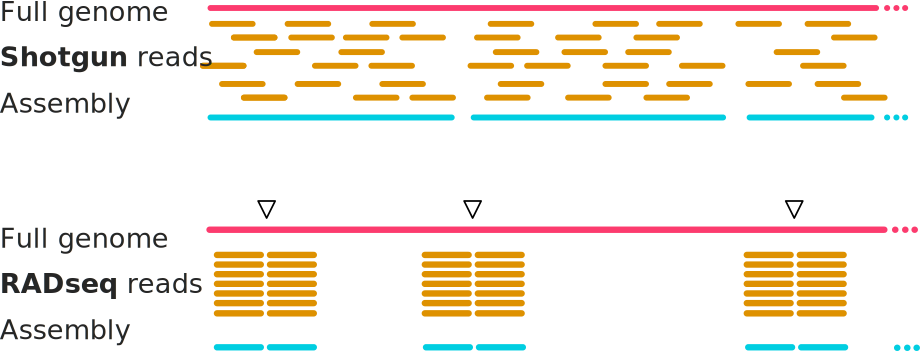
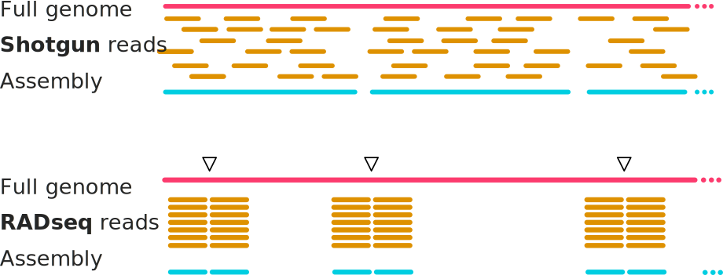
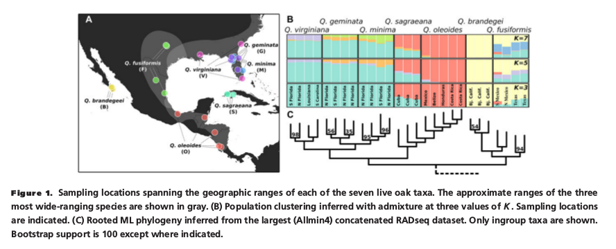

Principles and Applications of Modern DNA Sequencing
EEEB GU4055
Session 13: Phylogenetics II
 



Notebook 13.2: RAD-seq pipelines
The ipyrad software is used to make variant calls and assemble loci from
RAD-seq reads. Two approaches: de novo and reference. Reference mapped data
uses the mapping coordinates to identify orthology of sequences across samples.
Without a reference clustering is used to identify orthology based on
pairwise sequence similarity.
ipyrad is convenient to use as it provides a full pipeline from raw data to
assembled loci, and includes many analysis tools specialized for RAD data.
Notebook 13.2: Object oriented Python library
import ipyrad as ip
# create an Assembly object
data = ip.Assembly("test")
# view default params of object
data.params
# set parameters for assembly
data.params.raw_fastq_path = "/home/jovyan/ro-data/ipsimdata/rad_example_R1_.fastq.gz"
data.params.barcodes_path = "/home/jovyan/ro-data/ipsimdata/rad_example_barcodes.txt"
...
# run steps of the assembly
data.run("123", auto=True)
... 
Notebook 13.2: After assembly
# final assembled data files can be accessed from the object directly
data.outfiles
import ipyrad.analysis as ipa
import toytree
# infer a ML tree
rax = ipa.raxml(data=data.outfiles.phy, N=10)
rax.run(block=True, force=True)
# plot the tree
tre = toytree.tree(rax.trees.bipartitions)
tre.root(wildcard="3").draw();
Look at the output files (again, I recommend using `less`).
# opens an interactive view to one window full of the file. (q to quit).
less /home/jovyan/work/simdata/test_outfiles/test.loci
reference TTTAACTGTTCAAGTTGGCAAGATCAAGTCGTCCCTAGCCCCCGCGTCCGTTTTTACCTGGTCGCGGTCCCGACCCAGCTGCCCCC
1A_0 TTTAACTGTTCAAGTTGGCAAGATCAAGTCGTCCCTAGCCCCCGCGTCCGTTTTTACCTGGTCGCGGTCCCGACCCAGCTGCCCCC
1B_0 TTTAACTGTTCAAGTTGGCAAGATCAAGTCGTCCCTAGCCCCCGCGTCCGTTTTTACCTGGTCGCGGTCCCGACCCAGCTGCCCCC
1C_0 TTTAACTGTTCAAGTCGGCAAGATCAAGTCGTCCCTAGCCCCCGCGTCCGTTTTTACCTGGTCGCGGTCCCGACCCAGCTGCCCCC
1D_0 TTTAACTGTTCAAGTTGGCAAGATCAAGTCGTCCCTAGCCCCCGCGTCCGTTTTTACCTGGTCGCGGTCCCGACCCAGCTGCCCCC
2E_0 TTTAACTGTTCAAGTTGGCAAGATCAAGTCGTCCCTAGCCCCCGCGTCCGTTTTTACCTGGTCGCGGTCCCGACCCAGCTGCCCCC
2F_0 TTTAACTGTTCAAGTTGGCAAGATCAAGTCGTCCCTAGCCCCCGCGTCCGTTTTTACCTGGTCGCGGTCCCGACCCAGCTGCCCCC
2G_0 TTTAACTGTTCAAGTTGGCAAGATCAAGTCGTCCCTAGCCCCCGCGTCCGTTTTTACCTGGTCGCGGTCCCGACCCAGCTGCCCCC
2H_0 TTTAACTGTTCAAGTTGGCAAGATCAAGTCGTCCCGAGCCCCCGCGTCCGTTTTTACCTGGTCGCGGTCCCGACCCAGCTGCCCCC
3I_0 TTTAACTGTTCAAGTTGGCAAGATCAAGTCGTCCCTAGCCCCCGCGTCCGTTTTTACCTGGTCGCGGTCCCGACCCAGCTGCCCCC
3J_0 TTTAACTGTTCAAGTTGGCAAGATCAAGTCGTCCCTAGCCCCCGCGTCCGTTTTTACCTGGTCGCGGTCCCGACCCAGCTGCCCCC
3K_0 TTTAACTGTTCAAGTTGGCAAGATCAAGTCGTCCCTAGCCCCCGCGTCCGTTTTTACCTGGTCGCGGTCCCGACCCAGCTGCCCCC
3L_0 TTTAACTGTTCAAGTTGGCAAGATCAAGTCGTCCCTAGCCCCCGCGTCCGTTTTTACCTGGTCGCGGTCCCGACCCAGCTGCCCSC
// - - - |0:MT:5014-5100|
reference GCGACTCTATGGAGGAAGGCACACCCGCCATTGCAGGTCATCAACTATACTGAGTGCCGTGTTGGCACCATCCAGTGTGAATTACA
1A_0 GCGACTCTATGGAGGAAGGCACACCCGCCATTGCAGGTCATCAACTATACTGAGTGCCGTGTTGGCACCATCCAGTGTGAATTACA
1B_0 GCGACTCTATGGAGGAAGGCACACCCGCCATTGCAGGTCATCAACTATACTGAGTGCCGTGTTGGCACCATCCAGTGTGAATTACA
1C_0 GCGACTCTATGGAGGAAGGCACACCCGCCATTGCAGATCATCAACTATACTGAGTGCCGTGTTGGCACCATCCAGTGTGAATTACA
1D_0 GCGACTCTATGGAGGAAGGCACACCCGCCATTGCAGGTCATCAACTATACTGAGTGCCGTGTTGGCACCATCCAGTGTGAATTACA
2E_0 GCGACTCTATGGAGGAAGGCACACCCGCCATTGCAGGTCATCAACTATACTGAGTGCCGTGTTGGCACCATCCAGTGTGAATTACA
2F_0 GCGACTCTATGGAGGAAGGCACACCCGCCATTGCAGGTCATCAACTATACTGAGTGCCGTGTTGGCACCATCCAGTGTGAATTACA
2G_0 GCGACTCTATGGAGGAAGGCACACCCGCCATTGCAGGTCATCAACTATACTGAGTGCCGTGTTGGCACCATCCAGTGTGAATTACA
2H_0 GCGACTCTATGGAGGAAGGCACACCCGCCATTGCAGGTCATCAACTATACTGAGTGCCGTGTTGGCACCATCCAGTGTGAATTACA
3I_0 GCGACTCTATGGAGGAAGGCWCACCCGCCATTGCAGGTCATCAACTATACTGAGTGCCGTGTTGGCACCATCCAGTGTGAATTACA
3J_0 GCGACTCTATGGAGGAAGGCACACCCGCCATTGCAGGTCATCAACTATACTGAGTGCCGTGTTGGCACCATCCAGTGTGAATTACA
3K_0 GCGACTCTATGGAGGAAGGCACACCCGCCATTGCAGGTCATCAACTATACTGAGTGCCGTGTTGGCACCATCCAGTGTGAATTACA
3L_0 GCGACTCTTTGGAGGAAGGCACACCCGCCATTGCAGGTCATCAATTATAGTGAGTGCCGTGTTGGCACCATCCAGTGTGAATTACA
// - - - - - |1:MT:10114-10200|
reference CACTAGGACCCCCATATAGGTTATAGGGTTGCTATGTATAAGCCGTCGGCAAATTCCGCGAACGCTGTCGCGTCCAGCTTAATTAC
1A_0 CACTAGGACCCCCATATAGGTTATAGGGTTGCTATGTATAAGCCGTCGGCAAATTCCGCGAACGCTGTCGCGTCCAGCTTAATTAC
1B_0 CACTAGGACCCCCATATAGGTTATAGGGTTGCTATGTATAAGCCGTCGGCAAATTCCGCGAACGCTGTCGCGTCCAGCTTAATTAC
1C_0 CACTAGGACCCCCATATAGGKTATAGGGTWGCTATGTATAAGCCGTCGGCAAATTCCGCGAACGCTGTCRCGTCCAGCTTAATTAC
1D_0 CACTAGGACCCCCATATAGGTTATAGGGTTGCTATGTATAAGCCGTCGGCAAATTCCGCGAACGCTGTCGCGTCCAGCTTAATCAC
2E_0 CACTAGGACCCCCATATAGGTTATAGGGTTGCTATGTATAAGCCGTCGGCAAATTCCGCGAACGCTGTCGCGTCCAGCTTAATTAC
2F_0 CACTAGGACCCCCATATAGGTTATAGGGTTGCTATGTATAAGCCGTCGGCAAATTCCGCGAACGCTGTCGCGTCCAGCTTAATTAC
2G_0 CACTAGGACCCCCATATAGGTTATAGGGTTGCTATGTATAAGCCGTCGGCAAATTCCGCGAACGCTGTCGCGTCCAGCTTAATTAC
2H_0 CACTAGGACCCCCATATAGGTAATAGGGTTGCTATGTATAAGCCGTCGGCAAATTCCGCGAACGCTGTCGCRTCCAGCTTAATTAC
3I_0 CACTAGAACCCCCATATAGGTTATAGGGTTGCTATGTATAAGCCGTCGGCAAATTCCGCGAACGCTGTCGCGTCCAGCTTAATTAC
3J_0 CACTAGRACCCCCATATAGGTTATAGGGTTGCTATGTATAAGCCGTCGGCAAATTCCGCGAACGCTGTCGCGTCCAGCTTAATTAC
3K_0 CACTAGGACCCCCATATAGGTTATAGGGTTGCTATGTATAAGCCGTCGGCAAATTCCGCGAACGCTGTCGCGTCCAGCTTAATTAC
3L_0 CACTAGGACCCCCATATAGGTTATAGGGTTGCTATGTATAAGCCGTCGGCAAATTCCGCGAACGCTGTCGCGTCCAGCTTAATTAC
// * -- - - - - |2:MT:15214-15300|
Let's look at an empirical example:
# opens an interactive view to one window full of the file. (q to quit).
less /home/jovyan/ro-data/SRP021469_outfiles/SRP021469.loci
29154_superba_SRR1754715 TCATGGATTTTATTAATTTTG--TAAAAAAGATTGAATAAGTATGTTCAATAGAATATATTATGCTTGAC
30556_thamno_SRR1754720 TCATGGATTTTATTAATTTTG-AAAAAAAAGATTGAATAAGTATGTTTAATATAATATATTATGCTTGAC
30686_cyathophylla_SRR1754730 TCATGGATTTTATTAATTTTG--TAAAAAAGATTGAATAAGTATGTTCAATAGAATATATTATGCTTGAC
33413_thamno_SRR1754728 TCATGGATTTTATTAATTTTG--TAAAAAAGATTGAATAAGTATGTTTAATATAATATATTATGCTTGAC
35236_rex_SRR1754731 TCATGGATTTTATTAATTTTG-AAAAAAAAGATTGAATAAGTATGTTTAATATAATATATTATGCTTGAC
35855_rex_SRR1754726 TCATGGATTTTATTAATTTTG-AAAAAAAAGATTGAATAAGTATGTTTAATATAATATATTATGCTTGAC
40578_rex_SRR1754724 TCATGGATTTTATTAATTTTGAAAAAAAAAGATTGAATAAGTATGTTTAATATAATATATTATGCTTCAC
// * * * - |0|
29154_superba_SRR1754715 GGNGAATATTGTTTTCCACGACATTGATAAAACTGATCATCTTTAAGAACTACCCAAGACATGATCAAA
30556_thamno_SRR1754720 GGTGAATATTGTTTTCCACGACATTGATAAAACTGATCATCTTTAAGAACTACCCAAGACATGATCAAA
30686_cyathophylla_SRR1754730 GGNGAATATTGTTTTCCACGACAATGATAAAACTGATCATCTTTAAGAACTACCCAAGACATGATCAAA
33413_thamno_SRR1754728 GGTGAATATTGTTTTCCACGACATTGATAAAACTGATCATCTTTAAGAACTACCCAAGACATGATCAAA
35236_rex_SRR1754731 GGTGAATATTGTTTTCCACGACATTGATAAAACTGATCATCTTTAAGAACTACCCAAGACATGATCAAA
35855_rex_SRR1754726 GGTGAATATTGTTTTCCATGACATTGATAAAACTGATCATCTTTAAGAACAACCCAAGACATGATCAAA
38362_rex_SRR1754725 GGTGAATATTGTGTTCCACGACATTGATAAAACTGATCATCTTTAAGAACTACCCAAGACATGATCAAA
39618_rex_SRR1754723 GGTGAATATTGTGTTCCACGACATTGATAAAACTGATCATCTTTAAGAACTACCCAAGACATGATCAAA
40578_rex_SRR1754724 GGTGAATATTGTTTTCCAYGACATTGATAAAACTGATCATCTTTAAGAACWACCCAAGACATGATCAAA
41478_cyathophylloides_SRR1754722 GGTGAATATTGTTTTCCACGACATTGATAAAACTGATCATCTTTAAGAACTACCCAAGACATGATCAAA
41954_cyathophylloides_SRR1754721 GGTGAATATTGTTTTCCACGACATTGATAAAACTGATCATCTTTAAGAACTACCCAAGACATGATCAAA
// * * - * |1|
29154_superba_SRR1754715 AACACCTGAAATAAATTTTATGTGCAATGCACAC--ACACACACCTCCCATGCGTGTGTGTCAGAAANA
30556_thamno_SRR1754720 AACACCTGAAATAAATTTTATGTGCAACGCACACAAACACACACCTACCATGCGTGTGTGTCAGAAAAA
30686_cyathophylla_SRR1754730 AACACCTGAAATAAATTTTATGTGCAATGCACACACACACACACCTCCCATGCGTGTGTGTCAGAAAAA
35236_rex_SRR1754731 AACACCTGAAATAAATTTTATGTGCAATGCACACAAACACACACCTCCCATGCGTGTGTGTCAGAAAAA
35855_rex_SRR1754726 AACACCTGAAATAAATTTTATGTGCAATGCACACAAACACACACCTCCTATGCATGTGTGTCAGAAAAA
38362_rex_SRR1754725 AACACCTGAAATAAATTTTATGTGCAATGCACACAAACACACACCTCCCATGCGTGTGTGTCAGAAAAA
39618_rex_SRR1754723 AACACCTGAAATAAATTTTATGTGCAATGCACACAAACACACACCTCCCATGCGTGTGTGTCAGAAAAA
40578_rex_SRR1754724 AACACCTGAAATAAATTTTATGTGCAATGCACACAAATACACACCTCCCATGCGTGTGTGTCAGAAAAA
// - - - - - - |2|
Phylogenomics II
Inference of phylogeny and introgression from multi-locus genomic data.
See Table 1 in the Eaton et al. paper which shows the number of RAD-seq loci that were included in de novo assembled data sets that were assembled with different parameter settings. The Allmin4 and Allmin20 assemblies differ greatly in the total number of loci, the number of informative sites, and the missing data. Why do you think?
RAD-seq data is characterized by missing data because many loci will be sequenced for some samples but not for others. This can occur from mutations to restriction sites, from low sequencing coverage, or from the generation of new restriction sites in only a subset of samples. These data sets were assembled with different parameters to yeild data sets with different amounts of missingness. Lots of missing data is not a problem for phylogenetic inference. It is a big problem for many population genetic methods like principal components analysis. In this paper Eaton et al. found missingness had no effect on phylogeny, and they used a data set with very little missing data (allmin20) for structure analyses.
Two important considerations for inferring introgression:
(1) Missing samples (ghost lineages) may be the true source of introgression.
(2) Phylogenetic relatedness (non-independence) can give a spurious signal of
introgression.
Phylogenomics II: the coalescent
Genealogical relationships vary across the genome because the genome represents a mosaic of chunks inherited from many different ancestors. This variation can be modeled using the coalescent -- a mathematical approximation for the relationship between population size and the expected number of generations back in time until two individuals share a common ancestor.